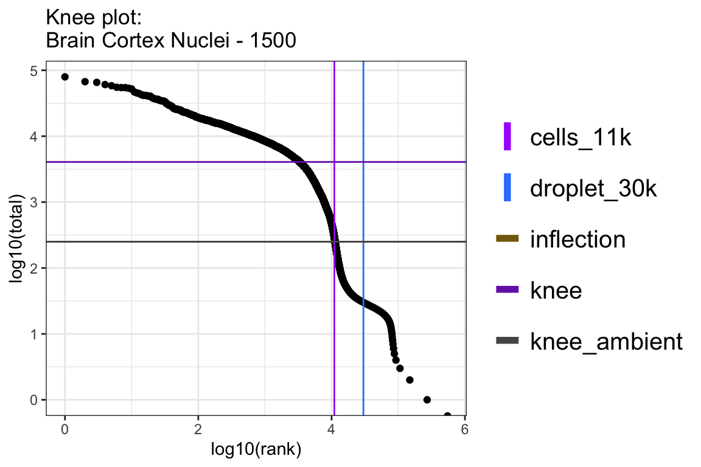
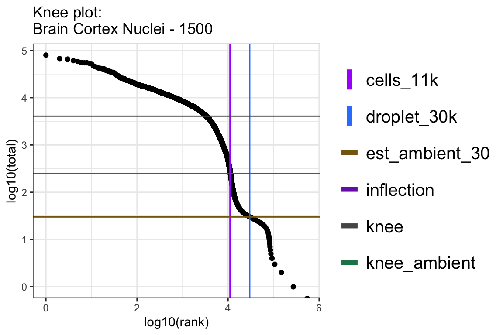

Last updated: 2026-10-06
Checks: 7 0
Knit directory:
ambient_doublet_singlecell/
This reproducible R Markdown analysis was created with workflowr (version 1.7.1). The Checks tab describes the reproducibility checks that were applied when the results were created. The Past versions tab lists the development history.
Great! Since the R Markdown file has been committed to the Git repository, you know the exact version of the code that produced these results.
Great job! The global environment was empty. Objects defined in the global environment can affect the analysis in your R Markdown file in unknown ways. For reproduciblity it’s best to always run the code in an empty environment.
The command set.seed(20260605) was run prior to running
the code in the R Markdown file. Setting a seed ensures that any results
that rely on randomness, e.g. subsampling or permutations, are
reproducible.
Great job! Recording the operating system, R version, and package versions is critical for reproducibility.
Nice! There were no cached chunks for this analysis, so you can be confident that you successfully produced the results during this run.
Great job! Using relative paths to the files within your workflowr project makes it easier to run your code on other machines.
Great! You are using Git for version control. Tracking code development and connecting the code version to the results is critical for reproducibility.
The results in this page were generated with repository version 8180ed0. See the Past versions tab to see a history of the changes made to the R Markdown and HTML files.
Note that you need to be careful to ensure that all relevant files for
the analysis have been committed to Git prior to generating the results
(you can use wflow_publish or
wflow_git_commit). workflowr only checks the R Markdown
file, but you know if there are other scripts or data files that it
depends on. Below is the status of the Git repository when the results
were generated:
Ignored files:
Ignored: .DS_Store
Ignored: .RData
Ignored: .Renviron
Ignored: .Rhistory
Ignored: .Rproj.user/
Ignored: CLAUDE.md
Ignored: analysis/figures_v1/
Ignored: analysis/figures_v2/
Ignored: analysis/figures_v3/
Ignored: analysis/obsolete/
Ignored: analysis/qc_filtered_ambient/
Ignored: analysis/untracked_BAL_inflammation_10x_HTO_clean_decontX_different_doublet_settings.Rmd
Ignored: analysis/untracked_BAL_inflammation_10x_HTO_clean_soupX_different_doublet_settings.Rmd
Ignored: analysis/untracked_BrainCortex_nuclei_10x_QC_filtering_deMULTIplex2.Rmd
Ignored: analysis/untracked_BrainCortex_nuclei_10x__LungCancer_10x_CMO_check_CMO_ADT_distribution.Rmd
Ignored: analysis/untracked_BrainCortex_nuclei_10x_clean_decontX_different_doublet_settings.Rmd
Ignored: analysis/untracked_BrainCortex_nuclei_10x_clean_soupX_different_doublet_settings.Rmd
Ignored: analysis/untracked_BrainCortex_nuclei_10x_evaluate_doublet_calling_deMULTIplex2.Rmd
Ignored: analysis/untracked_BrainCortex_nuclei_10x_inspect_SampleOfOrigin_false_singlets.Rmd
Ignored: analysis/untracked_BrainCortex_nuclei_10x_run_deMULTIplex2.Rmd
Ignored: analysis/untracked_LungCancer_10x_CMO_clean_decontX_different_doublet_settings.Rmd
Ignored: analysis/untracked_LungCancer_10x_CMO_clean_soupX_different_doublet_settings.Rmd
Ignored: analysis/untracked_figure_05.Rmd
Ignored: claude_logs/
Ignored: output/.DS_Store
Ignored: output/data/
Ignored: output/data_zenodo/
Ignored: output/figures/
Ignored: output/package_refs/
Ignored: output/results/.DS_Store
Ignored: output/results/BAL_inflammation_10x/.DS_Store
Ignored: output/results/BrainCortex_nuclei_10x/.DS_Store
Ignored: output/results/BrainCortex_nuclei_10x/DoubletCallingPerformance/.DS_Store
Ignored: output/results/LungCancer_10x/.DS_Store
Ignored: output/results/LungCancer_10x/DoubletCallingPerformance/.DS_Store
Ignored: output/results/Tonsils_10xFlex/.DS_Store
Ignored: output/results/Tonsils_10xFlex/Engineered/.DS_Store
Ignored: renv/
Ignored: scp_file.txt
Untracked files:
Untracked: code/make_figures.R
Untracked: output/results/BrainCortex_nuclei_10x/DoubletCallingPerformance/BrainCortex_nuclei_10x_TESTING_deMULTIplex2_correctAssignments_MCC.csv
Untracked: output/results/BrainCortex_nuclei_10x/DoubletCallingPerformance/BrainCortex_nuclei_10x_correctAssignments_MCC_qc_filtered_ambient.csv
Untracked: output/results/LungCancer_10x/DoubletCallingPerformance/LungCancer_10x_correctAssignments_MCC_qc_filtered_ambient.csv
Untracked: tmp.R
Unstaged changes:
Modified: .gitignore
Modified: analysis/Tonsils_10xFlex_evaluate_engineered_datasets.Rmd
Modified: analysis/figure_01.Rmd
Modified: analysis/figure_03.Rmd
Modified: analysis/figure_04.Rmd
Modified: analysis/figure_05.Rmd
Modified: analysis/supp_figure_01.Rmd
Modified: analysis/supp_figure_02.Rmd
Modified: analysis/supp_figure_03.Rmd
Modified: analysis/supp_figure_04.Rmd
Modified: output/results/BAL_inflammation_10x/DoubletCallingPerformance/BAL_inflammation_10x_correctAssignments_MCC.csv
Modified: output/results/BrainCortex_nuclei_10x/DoubletCallingPerformance/BrainCortex_nuclei_10x_correctAssignments_MCC.csv
Modified: output/results/LungCancer_10x/DoubletCallingPerformance/LungCancer_10x_correctAssignments_MCC.csv
Modified: output/results/Tonsils_10xFlex/Engineered/DoubletCallingPerformance/Tonsils_10xFlex_engineered_12k_0.15p_AllBatches_correctAssignments_MCC.csv
Modified: renv.lock
Note that any generated files, e.g. HTML, png, CSS, etc., are not included in this status report because it is ok for generated content to have uncommitted changes.
These are the previous versions of the repository in which changes were
made to the R Markdown
(analysis/BrainCortex_nuclei_10x_prepare_for_CellBender.Rmd)
and HTML
(docs/BrainCortex_nuclei_10x_prepare_for_CellBender.html)
files. If you’ve configured a remote Git repository (see
?wflow_git_remote), click on the hyperlinks in the table
below to view the files as they were in that past version.
| File | Version | Author | Date | Message |
|---|---|---|---|---|
| Rmd | 8180ed0 | Michelle Meier | 2026-10-06 | wflow_publish(c("analysis/BAL_inflammation_10x_HTO_prepare_for_CellBender.Rmd", |
| html | b9fcab0 | Michelle Meier | 2026-07-15 | Build site. |
| Rmd | fca2f9e | Michelle Meier | 2026-07-15 | wflow_publish("analysis/BrainCortex_nuclei_10x_prepare_for_CellBender.Rmd") |
CellBender performs a lot better when provided with the
input parameters expected-cells and
total-droplets-included. We can estimate both of these
input parameters from the resulting knee plot.
Please note also that there are multiple issues open on
CellBender github suggesting that it may struggle on
multiplexed data as its designed to be run on a per-sample basis. issue1,
issue2.
In addition, while not officially documented in their documentations, the authors do not recommend running it on the HTO features issue3
suppressPackageStartupMessages({
library(tidyverse)
library(here)
library(glue)
library(DropletUtils)
library(scran)
library(scater)
library(scuttle)
library(scales)
library(readr)
library(Seurat)
library(scDblFinder)
library(scMerge)
library(ggpubr)
library(BiocParallel)
library(clustree)
library(SingleCellExperiment)
library(scMerge)
library(Matrix)
library(SeuratDisk)
library(qs2)
library(patchwork)
})Warning: package 'ggplot2' was built under R version 4.5.2#load empty cells
counts_raw <- Read10X_h5(here("data/BrainCortex_nuclei_10x/experiment4_human_st_1500_demux_10x.h5"))Let’s make a kneeplot and highlight potential thresholds for
-total-droplet-included. The
-total-droplet-included does not have to be exact- every
droplet/barcode past that threshold will however be treated as an empty
droplet.
Make a function. This will show the first knee and inflection point (for cell calls), and second knee and inflection point (for ambient).
run_kneeplot <- function(counts,
label_df,
ylines_add = NULL,
name){
bcrank <- barcodeRanks(counts) #using DropletUtils function
bcrank_filtered <- bcrank[!duplicated(bcrank$rank), ]# only show unique points for plotting speed
#re-run compute ranks with bounds
#higher bound based on previous inflection point, lower at 0
bounds_for_ambient <- c(0,
bcrank@metadata$inflection)
bcrank_ambient <- barcodeRanks(counts_raw,
fit.bounds=bounds_for_ambient)
if(!is.null(ylines_add)){
y_lines <- rbind(data.frame(name=c("knee","inflection", "knee_ambient"),
num=c(bcrank@metadata$knee,
bcrank@metadata$inflection,
bcrank_ambient@metadata$knee)),
ylines_add)
} else {
y_lines <- data.frame(name=c("knee","inflection", "knee_ambient"),
num=c(bcrank@metadata$knee,
bcrank@metadata$inflection,
bcrank_ambient@metadata$knee))
}
plot <- ggplot(data = bcrank_filtered, aes(x = log10(rank), log10(total))) + geom_point()+
geom_vline(data= label_df, mapping = aes(xintercept = log10(num), colour = name)) +
geom_hline(data= y_lines, mapping = aes(yintercept = log10(num), colour = name)) +
theme_bw() +
scale_colour_manual(values = unname(Polychrome::alphabet.colors(nrow(label_df) + nrow(y_lines))))+
theme_bw() + theme(legend.title = element_blank(), legend.text = element_text(size=15),
legend.spacing.y = unit(0.5, "cm"), legend.key.spacing.y = unit(0.5, "cm"))+
guides(colour = guide_legend(override.aes = list(linewidth = 2)))+
ggtitle(sprintf('Knee plot:\n%s', name))
return(list(plot=plot,metric=y_lines))
}From the paper’s supp data table, we know that we’re expecting ~11k cells.
#set same test thresholds for all
label_df <- data.frame(name=c("cells_11k", "droplet_30k"),
num = c(11000, 30000))
out <- run_kneeplot(counts = counts_raw, label_df = label_df, name="Brain Cortex Nuclei - 1500") #the 1500 refers to the concentration
out$plot
| Version | Author | Date |
|---|---|---|
| b9fcab0 | Michelle Meier | 2026-07-15 |
DT::datatable(out$metric)Knee ambient calculation failed. Make second plot where I manually add
#set same test thresholds for all
label_df <- data.frame(name=c("cells_11k", "droplet_30k"),
num = c(11000, 30000))
manual_knee <- data.frame(name="est_ambient_30",
num = c(30))
out <- run_kneeplot(counts = counts_raw,
label_df = label_df,
ylines_add = manual_knee,
name="Brain Cortex Nuclei - 1500") #the 1500 refers to the concentration
out$plot
sessionInfo()R version 4.5.0 (2025-04-11)
Platform: aarch64-apple-darwin20
Running under: macOS Sequoia 15.7.9
Matrix products: default
BLAS: /Library/Frameworks/R.framework/Versions/4.5-arm64/Resources/lib/libRblas.0.dylib
LAPACK: /Library/Frameworks/R.framework/Versions/4.5-arm64/Resources/lib/libRlapack.dylib; LAPACK version 3.12.1
locale:
[1] en_US.UTF-8/en_US.UTF-8/en_US.UTF-8/C/en_US.UTF-8/en_US.UTF-8
time zone: Australia/Melbourne
tzcode source: internal
attached base packages:
[1] stats4 stats graphics grDevices datasets utils methods
[8] base
other attached packages:
[1] patchwork_1.3.2 qs2_0.1.5
[3] SeuratDisk_0.0.0.9021 Matrix_1.7-3
[5] clustree_0.5.1 ggraph_2.2.1
[7] BiocParallel_1.42.1 ggpubr_0.6.0
[9] scMerge_1.24.0 scDblFinder_1.22.0
[11] Seurat_5.3.1.0000 SeuratObject_5.1.0
[13] sp_2.2-0 scales_1.4.0
[15] scater_1.36.0 scran_1.36.0
[17] scuttle_1.18.0 DropletUtils_1.28.0
[19] SingleCellExperiment_1.30.1 SummarizedExperiment_1.38.1
[21] Biobase_2.68.0 GenomicRanges_1.60.0
[23] GenomeInfoDb_1.44.0 IRanges_2.42.0
[25] S4Vectors_0.46.0 BiocGenerics_0.54.0
[27] generics_0.1.4 MatrixGenerics_1.20.0
[29] matrixStats_1.5.0 glue_1.8.0
[31] here_1.0.1 lubridate_1.9.4
[33] forcats_1.0.0 stringr_1.5.1
[35] dplyr_1.1.4 purrr_1.2.0
[37] readr_2.1.5 tidyr_1.3.1
[39] tibble_3.3.0 ggplot2_4.0.3
[41] tidyverse_2.0.0 workflowr_1.7.1
loaded via a namespace (and not attached):
[1] R.methodsS3_1.8.2 nnet_7.3-20
[3] DT_0.33 goftest_1.2-3
[5] Biostrings_2.76.0 HDF5Array_1.36.0
[7] rstan_2.32.7 vctrs_0.6.5
[9] spatstat.random_3.4-1 digest_0.6.37
[11] png_0.1-8 git2r_0.36.2
[13] ggrepel_0.9.6 deldir_2.0-4
[15] parallelly_1.45.0 batchelor_1.24.0
[17] renv_1.1.4 MASS_7.3-65
[19] reshape2_1.4.4 httpuv_1.6.16
[21] withr_3.0.2 xfun_0.52
[23] survival_3.8-3 memoise_2.0.1
[25] proxyC_0.5.2 ggbeeswarm_0.7.2
[27] zoo_1.8-14 gtools_3.9.5
[29] V8_8.0.1 pbapply_1.7-2
[31] DEoptimR_1.1-3-1 R.oo_1.27.1
[33] Formula_1.2-5 promises_1.3.3
[35] scatterplot3d_0.3-44 httr_1.4.7
[37] rstatix_0.7.2 restfulr_0.0.15
[39] globals_0.18.0 fitdistrplus_1.2-2
[41] cvTools_0.3.3 rhdf5filters_1.20.0
[43] stringfish_0.17.0 ps_1.9.1
[45] rhdf5_2.52.1 rstudioapi_0.17.1
[47] UCSC.utils_1.4.0 miniUI_0.1.2
[49] base64enc_0.1-3 processx_3.8.6
[51] curl_7.0.0 sfsmisc_1.1-20
[53] ScaledMatrix_1.16.0 h5mread_1.0.1
[55] polyclip_1.10-7 GenomeInfoDbData_1.2.14
[57] SparseArray_1.8.0 xtable_1.8-4
[59] evaluate_1.0.5 S4Arrays_1.8.1
[61] hms_1.1.3 irlba_2.3.5.1
[63] colorspace_2.1-1 hdf5r_1.3.12
[65] ROCR_1.0-11 reticulate_1.42.0
[67] spatstat.data_3.1-6 magrittr_2.0.4
[69] lmtest_0.9-40 later_1.4.2
[71] viridis_0.6.5 lattice_0.22-6
[73] robustbase_0.99-4-1 spatstat.geom_3.4-1
[75] future.apply_1.20.0 getPass_0.2-4
[77] scattermore_1.2 XML_3.99-0.18
[79] cowplot_1.1.3 RcppAnnoy_0.0.22
[81] Hmisc_5.2-3 pillar_1.10.2
[83] StanHeaders_2.32.10 nlme_3.1-168
[85] caTools_1.18.3 compiler_4.5.0
[87] beachmat_2.24.0 RSpectra_0.16-2
[89] stringi_1.8.7 tensor_1.5
[91] GenomicAlignments_1.44.0 plyr_1.8.9
[93] crayon_1.5.3 abind_1.4-8
[95] BiocIO_1.18.0 locfit_1.5-9.12
[97] bit_4.6.0 graphlayouts_1.2.2
[99] whisker_0.4.1 codetools_0.2-20
[101] BiocSingular_1.24.0 crosstalk_1.2.1
[103] bslib_0.9.0 QuickJSR_1.8.0
[105] plotly_4.10.4 mime_0.13
[107] splines_4.5.0 Rcpp_1.1.2
[109] fastDummies_1.7.5 sparseMatrixStats_1.20.0
[111] knitr_1.50 reldist_1.7-2
[113] fs_2.1.0 listenv_0.9.1
[115] checkmate_2.3.2 DelayedMatrixStats_1.30.0
[117] pkgbuild_1.4.8 ggsignif_0.6.4
[119] callr_3.7.6 statmod_1.5.0
[121] tzdb_0.5.0 tweenr_2.0.3
[123] startupmsg_1.0.0 pkgconfig_2.0.3
[125] tools_4.5.0 cachem_1.1.0
[127] viridisLite_0.4.2 numDeriv_2016.8-1.1
[129] fastmap_1.2.0 rmarkdown_2.29
[131] grid_4.5.0 ica_1.0-3
[133] Rsamtools_2.24.0 broom_1.0.8
[135] sass_0.4.10 BiocManager_1.30.26
[137] Polychrome_1.5.4 dotCall64_1.2
[139] carData_3.0-5 RANN_2.6.2
[141] rpart_4.1.24 farver_2.1.2
[143] tidygraph_1.3.1 mgcv_1.9-1
[145] yaml_2.3.10 foreign_0.8-90
[147] rtracklayer_1.68.0 cli_3.6.6
[149] lifecycle_1.0.5 uwot_0.2.3
[151] M3Drop_1.34.0 mvtnorm_1.3-3
[153] bluster_1.18.0 backports_1.5.0
[155] distr_2.9.7 timechange_0.3.0
[157] gtable_0.3.6 rjson_0.2.23
[159] ggridges_0.5.6 densEstBayes_1.0-2.2
[161] progressr_0.15.1 parallel_4.5.0
[163] limma_3.64.1 jsonlite_2.0.0
[165] edgeR_4.6.2 RcppHNSW_0.6.0
[167] bitops_1.0-9 bit64_4.6.0-1
[169] xgboost_1.7.11.1 Rtsne_0.17
[171] spatstat.utils_3.1-4 BiocNeighbors_2.2.0
[173] RcppParallel_5.1.10 bdsmatrix_1.3-7
[175] jquerylib_0.1.4 metapod_1.16.0
[177] dqrng_0.4.1 loo_2.8.0
[179] spatstat.univar_3.1-3 R.utils_2.13.0
[181] lazyeval_0.2.2 shiny_1.10.0
[183] ruv_0.9.7.1 htmltools_0.5.8.1
[185] sctransform_0.4.2 spam_2.11-1
[187] ResidualMatrix_1.18.0 XVector_0.48.0
[189] RCurl_1.98-1.17 rprojroot_2.1.1
[191] gridExtra_2.3 igraph_2.1.4
[193] R6_2.6.1 gplots_3.2.0
[195] labeling_0.4.3 cluster_2.1.8.1
[197] bbmle_1.0.25.1 Rhdf5lib_1.30.0
[199] rstantools_2.4.0 DelayedArray_0.34.1
[201] tidyselect_1.2.1 vipor_0.4.7
[203] htmlTable_2.4.3 ggforce_0.5.0
[205] inline_0.3.21 car_3.1-3
[207] future_1.58.0 rsvd_1.0.5
[209] KernSmooth_2.23-26 S7_0.2.1
[211] data.table_1.17.4 htmlwidgets_1.6.4
[213] RColorBrewer_1.1-3 rlang_1.3.0
[215] spatstat.sparse_3.1-0 spatstat.explore_3.4-3
[217] beeswarm_0.4.0